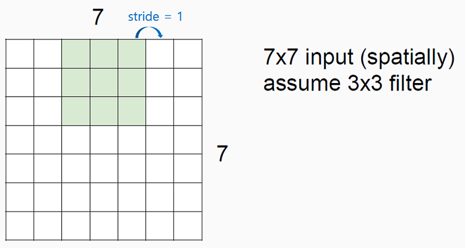

Convolutional Neural Networks CNNs / ConvNets
1959년 고양이에게 특정 그림을 보여주면서 그림에 따라 각기 다른 뉴런들이 반응하는 현상으로 부터 CNN의 아이디어를 얻었다.
source : https://hunkim.github.io/ml/lec11.pdfConvNet architecture는 다음의 순서를 따른다.
INPUT -> [[CONV -> RELU]*N -> POOL?]*M -> [FC->RELU]*K -> FCPOOL?은 optinal POOLING layer를 사용할지 말지에 대한 option을 뜻한다.
FC는 Fully Connected의 약자로서 최종단에서 분류된 class를 취합하는데 사용된다
그림으로 아래와 같이 나타낼 수 있다.
source : http://cs231n.github.io/convolutional-networks/Start with an image (width x height x depth)
source : https://hunkim.github.io/ml/lec11.pdf
filter의 크기는 조정 가능하다.
Get one Number using the filter
source : http://cs231n.github.io/convolutional-networks/#conv하나의 filter는 하나의 값으로 만들 수 있다.
one number = Wx+b = ReLU(Wx+b)
Wx+b로 값을 만들면 linear regression층을,
ReLU(Wx+b)로 값을 계산하면 ReLU층을 만들게 되는 것이다.
Let's look at other areas with the same filter(w)
source : https://hunkim.github.io/ml/lec11.pdf
필터를 옆으로/아래로 옮겨가며 계산한다.
그렇다면 얼마나 많은 weight이 필요한것일까?
spatial dimensions 관찰하기
W1 x H1 x D1 사이즈의 Input Volume을 갖는다고 할 때
-
filter의 갯수를 K
-
filter의 spatial extent, 즉 정사각형 길이를 F
-
stride를 S
-
zero padding의 크기를 P라 하면,
W2 x H2 x D2 사이즈의 output을 만들수 있으며, ouput의 크기는 아래와 같다.
-
W2 = (W1 - F + 2P) / S + 1
-
H2 = (H1 - F + 2P) / S + 1
-
D2 = K
filter 당 F • F • D1 개의 weights들이 필요하고, total F • F • D1 • K 개의 weights과 K개의 bias들이 필요하다.
Example
W1 = 5, H1 = 5, D1 = 3 인 input volume에 대하여 CONV layer의 parameter를
K = 2, F = 3, S = 2, P = 1 이라 할 때, output volume은
(5 - 3 + 2)/2 + 1 = 3으로 3 x 3 volume을 갖게 된다.
 source : https://hunkim.github.io/ml/lec11.pdf
교수님께서 강의노트에서 사용한 예제는 Padding layer(=P)가 0이라 할 때,
W1 = 7, F = 3, S = 1 인 경우로 (7 - 3 + 2*0)/1 + 1 = 5,
즉 5 x 5 volume의 output을 갖게 된다.
S = 2 인 경우는 3 x 3 volume의 output을 갖게 된다.
Padding layer를 갖는 경우
source : https://hunkim.github.io/ml/lec11.pdf
padding은 가장자리에 0으로 둘러싸주는 것을 말한다.
위의 W2 = (W1 - F + 2P) / S + 1 공식에 따르면 output의 volume은 얼마가 될까?
(7 - 3 + 2 * 1) / 1 + 1 = 7, 즉 7 x 7 volume의 output이 나옴을 알 수 있다.
(난 산수를 못해ㅠㅠ 이럴 필요가 없는게 킹 갓 TF가 알아서 다 계산해준다~)
Swiping the entire image
 source : https://hunkim.github.io/ml/lec11.pdf
source : https://hunkim.github.io/ml/lec11.pdf위와 같은 방법으로 여러개의 filter를 만든다고 하자.
source : https://hunkim.github.io/ml/lec11.pdf
여러장의 filter로 Convolution Layer를 통과하면 filter 개수의 dimensions을 갖는 map이 생성된다.
output volume은 앞서 계산한 방법으로 예측 가능하다. (P = 0 일때 28 x 28)
Convolution layers
source : https://hunkim.github.io/ml/lec11.pdf
32 x 32 x 3 의 input image를 6장의 5 x 5 x 3의 filters로 Convolutional ReLU Layer를 통과시키고, 통과한 activation maps을 다시 10장의 5 x 5 x 6의 filters로 Convolutional ReLU Layer를 통과시키는 것을 뜻한다.
총 몇개의 weight variables가 필요할까?
우선, 첫 번째 Convolutional ReLU Layer를 통과한 output volume은 28 x 28 x 6임을 알 수 있다. padding이 없고, stride = 1 이란 가정 하에 (32 - 5 + 0) / 1 + 1 = 28
두 번째는 위와 같이 계산하면, 24 x 24 x 10이 나온다.
Pooling layer sampling
source : https://hunkim.github.io/ml/lec11.pdf
input image에 대하여 filter를 거치어 만들어진 conv layer에 대하여 개별 layer의 size를 바꾸는 과정을 pooling이라고 한다.
source : https://hunkim.github.io/ml/lec11.pdf
Max Pooling
가장 큰 값을 골라서 output sampling하기!
Fully Connected Layer ( FC layer )
Contains neurons that connect to the entire input volume, as in ordinary Neural Networks
마지막 pooling을 거치고 난 결과를 사용자가 원하는 만큼의 depth를 거치고나서 softmax classifier를 통과하여 최종 output label이 나오게 된다.
Demo 보기
ConvNetJS demo : training on CIFAR-10 source : https://cs.stanford.edu/people/karpathy/convnetjs/demo/cifar10.html
Case Study
CNN의 활용을 과거 이미지 넷의 우승 모델들로 비추어보자.
LeNet-5
[LeCun et al., 1998]Convolutions에 적용되는 filter는 5 x 5 사이즈며, stride = 1 이다.
Subsampling(Pooling) layer는 2 x 2 사이즈며, stride = 2 이다.
architecture is [CONV-POOL-CONV-POOL-CONV-FC]
AlexNet
[krizhevsky et al. 2012]source : http://www.cs.toronto.edu/~fritz/absps/imagenet.pdf
Input : 227 x 227 x 3 RGB images
First layer (CONV1) : 96@ 11 x 11 filters applied at stride = 4
Output volume [55 x 55 x 96]
Parameters : ( 11 x 11 x 3 ) x 96 = 35k
Second layer (POOL1) : 3 x 3 filters applied at stride = 2
Output volume : [27 x 27 x 96]
Parameters : 0!
... and ...
Full (simplified) AlexNet architecture
[227 x 227 x 3] INPUT
[55 x 55 x 96] CONV1 : 96@ 11 x 11 filters at stride = 4, pad = 0
[27 x 27 x 96] MAX POOL1 : 3 x 3 filters at stride = 2
[27 x 27 x 96] NORM1 : Normalization layer
[27 x 27 x 256] CONV2 : 256@ 5 x 5 filters at stride = 1, pad = 2
[13 x 13 x 256] MAX POOL2 : 3 x 3 filters at stride = 2
[13 x 13 x 256] NOMR2 : Normalization layer
[13 x 13 x 384] CONV3 : 384@ 3 x 3 filters at stride = 1, pad = 1
[13 x 13 x 384] CONV4 : 384@ 3 x 3 filters at stride = 1, pad = 1
[13 x 13 x 256] CONV4 : 256@ 3 x 3 filters at stride = 1, pad = 1
[6 x 6 x 256] MAX POOL3 : 3 x 3 filters at stride = 2
[4096] FC6 : 4096 neurons
[4096] FC7 : 4096 neurons
[4096] FC8 : 1000 neurons (class scores)
p.s. Image Net은 1000개의 레이블을 맞추는 대회이다.
Details/Retrospectives :
-
first use of ReLU awesome...
-
used Norm layers (not common anymore)
-
heavy data augmentation
-
dropout = 0.5
-
batch size : 128
-
SGD Momentum : 0.9
-
Learning rate = 1e-2, reduced by 10 manually when val accuracy plateaus
-
L2 weight decay 5e-4
-
7 CNN ensemble : 18.2% -> 15.4%
GoogLeNet
[Szegedy et al. 2014]source : https://www.cs.unc.edu/~wliu/papers/GoogLeNet.pdf
2014년 ILSVRC winner (6.7% top 5 error)
Inception Module을 처음으로 사용한 모델이다.
Inception이란 작은 Conv 레이어 여러개로 연산 density를 높히는 방식
ResNet
[He et al., 2015]MSRA Microsoft Research Asia @ ILSVRC & COCO 2015 Competitions
1st places in all five main tracks
-
ImageNet Classification : "Ultra-deep" (quote Yann) 152-layer nets
-
ImageNet Detection : 16% better than 2nd
-
ImageNet Localization : 27% better than 2nd
-
COCO Detection : 11% better than 2nd
-
COCO Segmentation : 12% better than 2nd
2015년 ILSVRC winner (3.6% top 5 error)
Revolution of Depth
-
8개의 GPU로 2~3주간 학습 시간 소요
-
8배 이상의 layer를 갖고도 VGGNet보다 runtime이 빠름
forward pass 방식 사용.
source : http://image-net.org/challenges/talks/ilsvrc2015_deep_residual_learning_kaiminghe.pdf
Convolutional Neural Networks for Sentence Clssification
[Yoon Kim, 2014]source : http://www.aclweb.org/anthology/D14-1181
text에 대한 분류도 CNN을 활용한 논문이 있다.
DeepMind's AlphaGo
2016년 3월 15일 바둑의 역사를 새로 쓴 알파고 역시 CNN을 사용하였다.
source : https://www.cnet.com/news/google-deepmind-hooked-us-on-go-the-geekiest-game-youve-never-heard-of/
part of nature article
source : https://www.nature.com/articles/nature16961policy network:
-
[19 x 19 x 48] Input
-
CONV1 : 192@ 5 x 5 filters, stride = 1, pad = 2 => output : [19 x 19 x 192]
-
CONV2 : 192@ 3 x 3 filters, stride = 1, pad = 1 => output : [19 x 19 x 192]
-
Final CONV : 1@ 1 x 1 filters, stride = 1, pad = 0 => output : [19 x 19] (probability map of promising moves)